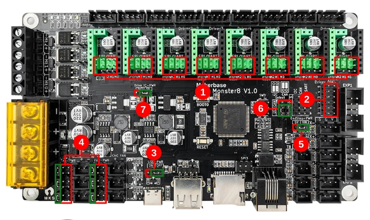
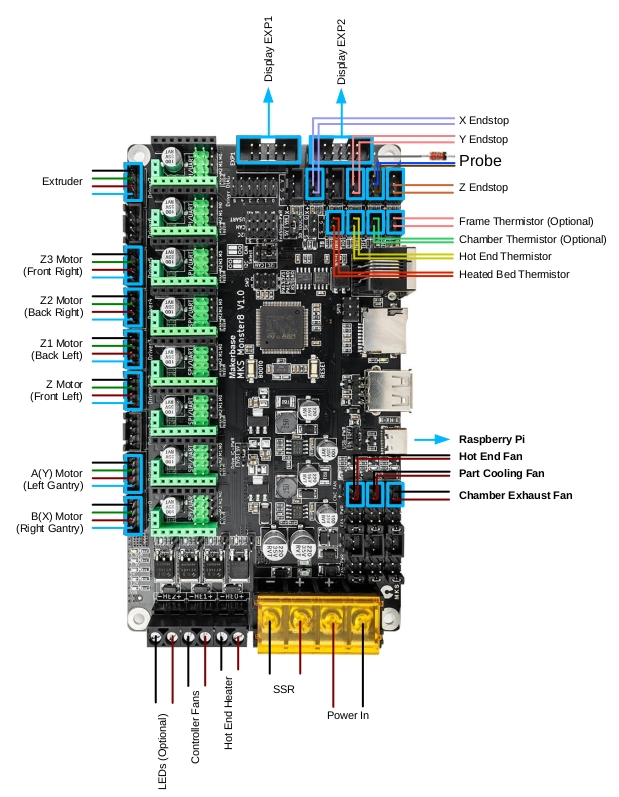

Voron V2 / Trident - MKS Makerbase Monster8 Wiring
Initial Preparation
Set jumpers as shown:

- Green – Add Jumper
- Red – Remove Jumper
- Insert only the jumper in the Green and remove all other jumpers in the Red in order to use TMC2209 UART mode.
- Remove all the jumpers of DIAG to avoid the influence of TMC2209 DIAG on the endstop.
- Set the USB-PWR jumper to off to avoid the interaction between the USB 5V of raspberry pi and the DC-DC 5V of the motherboard.
- Set the six jumpers to VIN to set the fan voltage to the system supply voltage.
- Set the jumper to VIN to set the probe voltage to the system supply voltage.
- Set the two jumpers into I2C to enable the I2C output pins.
- Set the jumper to 5V to set the driver power.
Wiring
- Connect 24V and GND (V+ and V-) from the PSU to POWER (marking on rear of board)
- Connect the B Motor (gantry left) to Driver0
- Connect the A Motor (gantry right) to Driver1
- Connect the Z motor (front-left) to Driver2-2 (leaving an empty connector between A and Z)
- Connect the Z1 motor to Driver3
- Connect the Z2 motor to Driver4
- Connect the Z3 motor to Driver5 (v2 only)
- Connect the extruder motor to Driver7 (leaving an empty connector between Z3 and E)
- Connect the hot end heater to HE0
- Connect the bed SSR (DC Control Side) to H-BED (marking on rear of board)
- Connect the hot end fan to FAN0
- Connect the part cooling fan to FAN1
- Connect the chamber exhaust fan to FAN2
- Connect the controller fans to HE1
- Connect the hot end thermistor to TH0
- Connect the bed thermistor to TB
- Connect the X endstop to X+
- Connect the Y endstop to Y+
- Connect the Z endstop to Z-
- Connect the probe with BAT85 to Z+
- if using a mini12864 display, connect to EXP1 & EXP2, only after completing the steps shown below

mini 12864 Display
Other
- example config is located here
- full pinout, and other MKS Makerbase documentation is located here
- Monster8 v1.0_003 pinout is located here
- DIN rail mount for Monster8 is located here
- Display bracket for MKS mini12864 V3.0 is located here